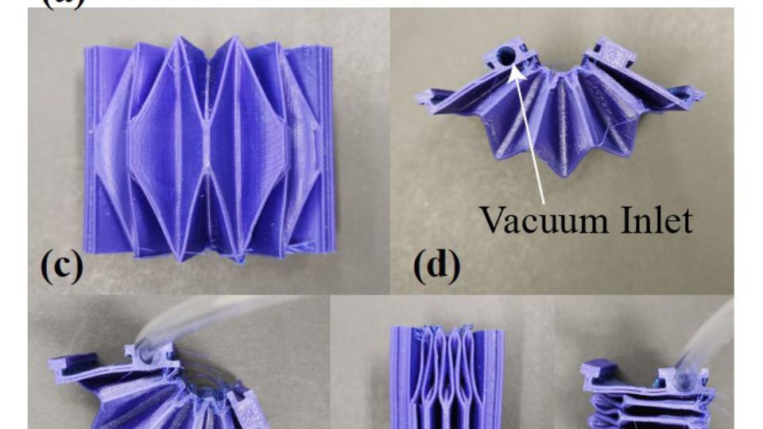

Play video
Play videoVTAP Gripper: Synergizing Fingertip Sensing and a Visuo-Tactile Active Palm for Dexterous In-Hand Manipulation
IEEE/RSJ International Conference on Intelligent Robots and Systems (IROS), 2026
Research output
Journal articles, conference papers, preprints, and patent applications. A complete record is on Google Scholar and ORCID.
* equal contribution
Play videoIEEE/RSJ International Conference on Intelligent Robots and Systems (IROS), 2026

IEEE/RSJ International Conference on Intelligent Robots and Systems (IROS), 2026

IEEE/RSJ International Conference on Intelligent Robots and Systems (IROS), 2026
 Play video
Play videonpj Robotics, vol. 4, art. 47, 2026
 Play video
Play videoASME Letters in Translational Robotics, 2026 (invited; presented at ASME IDETC/CIE 2026)
 Play video
Play videoIEEE Transactions on Haptics, vol. 18, pp. 507–518, 2025
 Play video
Play videoAdvanced Robotics Research, 2025
 Play video
Play videoIEEE Sensors Journal, vol. 23, no. 20, pp. 25440–25450, 2023

IEEE/RSJ International Conference on Intelligent Robots and Systems (IROS), 2020
Humanizing Work and Work Environment (HWWE), 2017
Humanizing Work and Work Environment (HWWE), 2017
arXiv:2310.10959, 2023
U.S. Provisional Patent Application, filed
U.S. Provisional Patent Application, filed
U.S. Provisional Patent Application, filed
U.S. Provisional Patent Application, filed